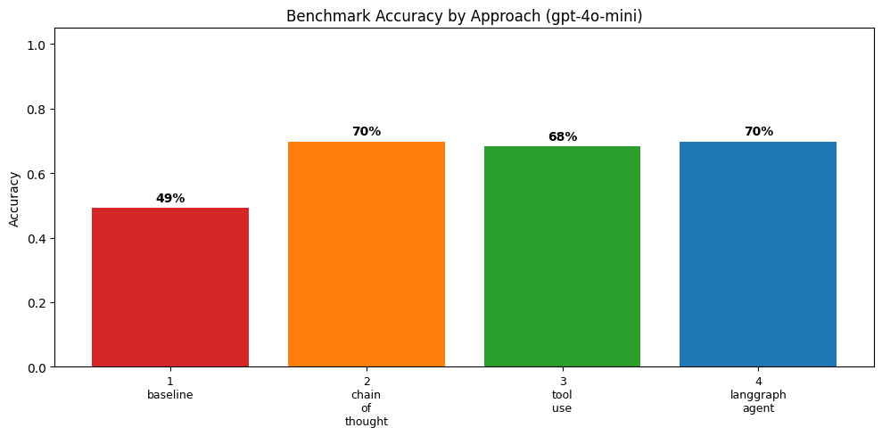
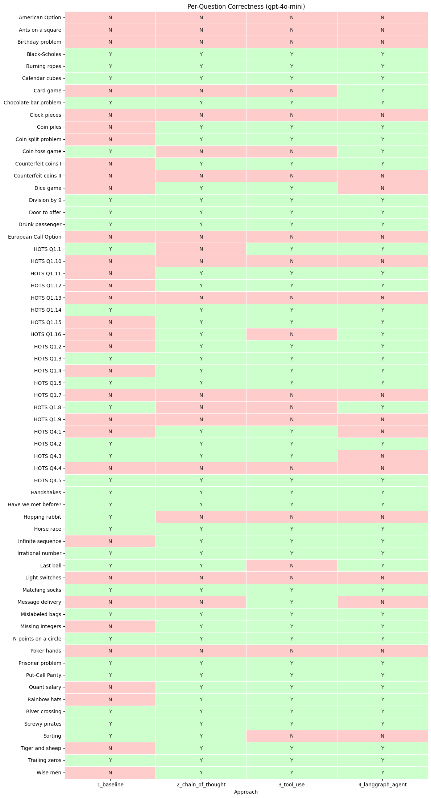

03. Building Agents: From Simple Prompting to Tool-Using Agents#
In Notebook 02 we saw that different LLMs vary widely in accuracy on quant-finance interview questions. Can we improve a cheap model’s performance through better prompting and tool use – without switching to a more expensive model?
This notebook examines results from four progressively more sophisticated
approaches, all using openai/gpt-4o-mini via OpenRouter:
# |
Approach |
What changes |
Key idea |
|---|---|---|---|
1 |
Baseline |
Minimal prompt, no reasoning |
Just ask the question |
2 |
Chain-of-Thought |
Expert prompt with step-by-step reasoning |
Decompose hard problems |
3 |
Tool Use |
Same prompt + calculator tool |
Offload arithmetic |
4 |
LangGraph Agent |
Same prompt + tool, automated loop |
Framework for agents |
The experiments were run by agent_runner.py (via doit run_agent_experiments). This notebook loads the pre-computed results
and walks through what each approach does and why it helps.
Why gpt-4o-mini? It is one of the cheapest models that supports
OpenAI-style function calling – a requirement for Sections 3 and 4.
Smaller open-source models (e.g. Llama 3.1 8B) are cheaper, but they
don’t reliably produce well-formed tool calls through OpenRouter.
Background Reading#
The techniques in this notebook are grounded in three influential papers:
1. Chain-of-Thought Prompting Elicits Reasoning in Large Language Models (Wei et al., NeurIPS 2022)
Generating a chain of thought – a series of intermediate reasoning steps – significantly improves the ability of large language models to perform complex reasoning.
The key finding: simply adding reasoning demonstrations (or even just the phrase “let’s think step by step”) to a prompt can dramatically improve performance on math and logic tasks. The model doesn’t get new knowledge – it just uses what it already knows more effectively.
2. ReAct: Synergizing Reasoning and Acting in Language Models (Yao et al., ICLR 2023)
ReAct prompts LLMs to generate both verbal reasoning traces and task-specific actions in an interleaved manner.
ReAct introduced the Thought / Action / Observation loop: the model thinks about what to do, acts (e.g. calls a tool), observes the result, and then thinks again. This interleaving of reasoning and acting makes the model more grounded and less prone to hallucination than chain-of-thought alone.
3. Toolformer: Language Models Can Teach Themselves to Use Tools (Schick et al., 2023)
LMs can teach themselves to use external tools via simple APIs and achieve the best of both worlds.
Toolformer showed that giving a language model access to external tools – a calculator, a search engine, a calendar – lets it overcome fundamental limitations like poor arithmetic, without sacrificing its language abilities.
1. Load Results#
from pathlib import Path
import matplotlib.pyplot as plt
import pandas as pd
import seaborn as sns
from IPython.display import Markdown, display
from settings import config
DATA_DIR = config("DATA_DIR")
OUTPUT_DIR = config("OUTPUT_DIR")
RESULTS_CSV = DATA_DIR / "agent_results" / "agent_results.csv"
df = pd.read_csv(RESULTS_CSV)
df["is_correct"] = df["is_correct"].astype(bool)
print(
f"Loaded {len(df)} results: "
f"{df['approach'].nunique()} approaches x "
f"{df['question_id'].nunique()} questions"
)
df.head()
Loaded 252 results: 4 approaches x 63 questions
| approach | question_id | question_type | title | source_book | chapter | difficulty | reference_answer | extracted_answer | is_correct | grader_explanation | tool_calls_made | error | |
|---|---|---|---|---|---|---|---|---|---|---|---|---|---|
| 0 | 1_baseline | text_only_q001 | text_only | Screwy pirates | green_book | Ch 2 | NaN | Pirates 1 and 3 get 1 coin each; pirate 5 keep... | 98 coins to the most senior pirate, 1 coin to ... | True | The candidate's answer is mathematically equiv... | 0 | NaN |
| 1 | 1_baseline | text_only_q002 | text_only | Tiger and sheep | green_book | Ch 2 | NaN | The sheep will not be eaten (100 is even) | Yes | False | The candidate's answer does not provide the re... | 0 | NaN |
| 2 | 1_baseline | text_only_q003 | text_only | River crossing | green_book | Ch 2 | NaN | 17 minutes | 17 minutes | True | The candidate's answer matches the reference a... | 0 | NaN |
| 3 | 1_baseline | text_only_q004 | text_only | Birthday problem | green_book | Ch 2 | NaN | September 1 | June 7 | False | The candidate's answer is incorrect because th... | 0 | NaN |
| 4 | 1_baseline | text_only_q005 | text_only | Card game | green_book | Ch 2 | NaN | Do not play; the expected payoff is negative f... | $50 | False | The candidate's answer does not address the qu... | 0 | NaN |
2. Baseline – Naive Prompting#
The baseline uses the simplest possible approach: a minimal system prompt that asks for a one-line answer with no explanation, and a small token budget (256 tokens).
SYSTEM_PROMPT_BASELINE = (
"Give a one-line answer to the following question. "
"No explanation needed.\n\n"
"End with FINAL ANSWER: <your answer>"
)
response = client.chat.completions.create(
model="openai/gpt-4o-mini",
messages=[
{"role": "system", "content": SYSTEM_PROMPT_BASELINE},
{"role": "user", "content": question_text},
],
max_tokens=256,
)
Without room to reason, the model must guess. This represents what you get if you fire a question at a cheap model and hope for the best.
baseline = df[df["approach"] == "1_baseline"]
print(f"Baseline accuracy: {baseline['is_correct'].sum()}/{len(baseline)} = {baseline['is_correct'].mean():.0%}")
baseline[["question_id", "title", "is_correct", "extracted_answer"]].head(10)
Baseline accuracy: 31/63 = 49%
| question_id | title | is_correct | extracted_answer | |
|---|---|---|---|---|
| 0 | text_only_q001 | Screwy pirates | True | 98 coins to the most senior pirate, 1 coin to ... |
| 1 | text_only_q002 | Tiger and sheep | False | Yes |
| 2 | text_only_q003 | River crossing | True | 17 minutes |
| 3 | text_only_q004 | Birthday problem | False | June 7 |
| 4 | text_only_q005 | Card game | False | $50 |
| 5 | text_only_q006 | Burning ropes | True | Light one end of the first rope and both ends ... |
| 6 | text_only_q007 | Trailing zeros | True | 24 |
| 7 | text_only_q008 | Horse race | True | 7 |
| 8 | text_only_q009 | Infinite sequence | False | 2 |
| 9 | text_only_q010 | Calendar cubes | True | 0, 1, 2, 3, 4, 5 on one die and 0, 1, 2, 6, 7,... |
3. Chain-of-Thought Prompting#
Key idea from Wei et al. (2022): By asking the model to “think step by step,” we give it space to decompose hard problems into manageable pieces.
What Changes#
Two things change relative to the baseline:
System prompt – we frame the model as an expert and explicitly ask it to reason step by step.
Token budget – we increase
max_tokensfrom 256 to 4096 so the model has room to reason before answering. This is critical: without space to “think on paper,” the model can’t decompose multi-step problems.
SYSTEM_PROMPT_COT = (
"You are an expert in quantitative finance, probability, "
"statistics, and mathematical reasoning. ...\n\n"
"Read the question carefully and solve it step by step. "
"Show your reasoning clearly. ...\n\n"
"FINAL ANSWER: <your concise final answer here>"
)
response = client.chat.completions.create(
model="openai/gpt-4o-mini",
messages=[
{"role": "system", "content": SYSTEM_PROMPT_COT},
{"role": "user", "content": question_text},
],
max_tokens=4096,
)
cot = df[df["approach"] == "2_chain_of_thought"]
print(f"CoT accuracy: {cot['is_correct'].sum()}/{len(cot)} = {cot['is_correct'].mean():.0%}")
# Which questions flipped?
merged_bc = baseline[["question_id", "title", "is_correct"]].merge(
cot[["question_id", "is_correct"]],
on="question_id",
suffixes=("_baseline", "_cot"),
)
merged_bc["change"] = merged_bc.apply(
lambda r: (
"IMPROVED"
if not r["is_correct_baseline"] and r["is_correct_cot"]
else (
"REGRESSED"
if r["is_correct_baseline"] and not r["is_correct_cot"]
else "no change"
)
),
axis=1,
)
display(Markdown("**Questions that changed with CoT:**"))
merged_bc[merged_bc["change"] != "no change"][
["question_id", "title", "is_correct_baseline", "is_correct_cot", "change"]
].reset_index(drop=True)
CoT accuracy: 44/63 = 70%
Questions that changed with CoT:
| question_id | title | is_correct_baseline | is_correct_cot | change | |
|---|---|---|---|---|---|
| 0 | text_only_q002 | Tiger and sheep | False | True | IMPROVED |
| 1 | text_only_q009 | Infinite sequence | False | True | IMPROVED |
| 2 | text_only_q015 | Quant salary | False | True | IMPROVED |
| 3 | text_only_q016 | Coin piles | False | True | IMPROVED |
| 4 | text_only_q018 | Wise men | False | True | IMPROVED |
| 5 | text_only_q020 | Missing integers | False | True | IMPROVED |
| 6 | text_only_q021 | Counterfeit coins I | False | True | IMPROVED |
| 7 | text_only_q029 | Coin split problem | False | True | IMPROVED |
| 8 | text_only_q032 | Rainbow hats | False | True | IMPROVED |
| 9 | text_only_q033 | Coin toss game | True | False | REGRESSED |
| 10 | text_only_q037 | Hopping rabbit | True | False | REGRESSED |
| 11 | text_only_q038 | Dice game | False | True | IMPROVED |
| 12 | text_only_q044 | HOTS Q1.1 | True | False | REGRESSED |
| 13 | text_only_q045 | HOTS Q1.2 | False | True | IMPROVED |
| 14 | text_only_q047 | HOTS Q1.4 | False | True | IMPROVED |
| 15 | text_only_q050 | HOTS Q1.8 | True | False | REGRESSED |
| 16 | text_only_q053 | HOTS Q1.11 | False | True | IMPROVED |
| 17 | text_only_q054 | HOTS Q1.12 | False | True | IMPROVED |
| 18 | text_only_q057 | HOTS Q1.15 | False | True | IMPROVED |
| 19 | text_only_q058 | HOTS Q1.16 | False | True | IMPROVED |
| 20 | text_only_q059 | HOTS Q4.1 | False | True | IMPROVED |
4. Tool Use via OpenAI Function Calling#
Chain-of-thought helps the model reason, but even smart models make arithmetic mistakes. The insight from Toolformer (Schick et al., 2023) is that we can give the model access to external tools – like a calculator – so it can offload computation.
The ReAct pattern (Yao et al., 2022) tells us how to combine reasoning and tool use: the model thinks, acts (calls a tool), observes the result, and thinks again.
The Calculator Tool#
def calculator(expression: str) -> str:
"""Evaluate a math expression in a sandboxed namespace."""
SAFE = {"factorial": factorial, "comb": comb, "log": math.log, ...}
return str(eval(expression, SAFE))
The ReAct Loop (OpenAI function calling)#
TOOLS = [{"type": "function", "function": {
"name": "calculator",
"description": "Evaluate a mathematical expression...",
"parameters": {"type": "object", "properties": {
"expression": {"type": "string"}
}},
}}]
messages = [system_msg, user_msg]
for _ in range(max_iterations):
response = client.chat.completions.create(
model=MODEL, messages=messages,
tools=TOOLS, # <-- tools are available
)
msg = response.choices[0].message
if not msg.tool_calls: # model gave a final answer
break
# Execute each tool call and feed results back
messages.append(msg)
for tc in msg.tool_calls:
result = calculator(json.loads(tc.function.arguments)["expression"])
messages.append({"role": "tool", "tool_call_id": tc.id, "content": result})
Important Design Choice#
We use the same CoT system prompt – we do NOT add “use the calculator tool.” In testing, adding explicit tool-use instructions hurt performance by making the model focus on calling the tool rather than reasoning about the problem. The best approach: keep the CoT prompt and just make tools available.
tools = df[df["approach"] == "3_tool_use"]
print(f"Tool use accuracy: {tools['is_correct'].sum()}/{len(tools)} = {tools['is_correct'].mean():.0%}")
print(f"Questions where tools were called: {(tools['tool_calls_made'] > 0).sum()}/{len(tools)}")
print(f"Total tool calls: {tools['tool_calls_made'].sum()}")
Tool use accuracy: 43/63 = 68%
Questions where tools were called: 3/63
Total tool calls: 15
5. Full Agent with LangGraph#
The manual ReAct loop from Section 4 can be expressed as a state graph using LangGraph:
START --> [agent] --tool calls?--> [tools] --> [agent] --> ... --> END
from langchain_openai import ChatOpenAI
from langgraph.graph import StateGraph, MessagesState, START
from langgraph.prebuilt import ToolNode, tools_condition
llm = ChatOpenAI(model=MODEL, base_url=OPENROUTER_URL, ...)
llm_with_tools = llm.bind_tools([calculator_tool])
def agent_node(state: MessagesState):
return {"messages": [llm_with_tools.invoke(state["messages"])]}
graph = StateGraph(MessagesState)
graph.add_node("agent", agent_node)
graph.add_node("tools", ToolNode([calculator_tool]))
graph.add_edge(START, "agent")
graph.add_conditional_edges("agent", tools_condition)
graph.add_edge("tools", "agent")
agent = graph.compile()
The accuracy should be similar to Section 4 – the value of LangGraph is in code organization, composability, and debugging, not in producing different results.
lg = df[df["approach"] == "4_langgraph_agent"]
print(f"LangGraph accuracy: {lg['is_correct'].sum()}/{len(lg)} = {lg['is_correct'].mean():.0%}")
LangGraph accuracy: 44/63 = 70%
6. Comparison and Analysis#
summary = (
df.groupby("approach")
.agg(
total=("is_correct", "count"),
correct=("is_correct", "sum"),
accuracy=("is_correct", "mean"),
tool_calls=("tool_calls_made", "sum"),
)
.sort_index()
.reset_index()
)
summary.style.format({"accuracy": "{:.0%}", "tool_calls": "{:.0f}"})
| approach | total | correct | accuracy | tool_calls | |
|---|---|---|---|---|---|
| 0 | 1_baseline | 63 | 31 | 49% | 0 |
| 1 | 2_chain_of_thought | 63 | 44 | 70% | 0 |
| 2 | 3_tool_use | 63 | 43 | 68% | 15 |
| 3 | 4_langgraph_agent | 63 | 44 | 70% | 8 |
Accuracy by Approach#
fig, ax = plt.subplots(figsize=(10, 5))
colors = ["#d62728", "#ff7f0e", "#2ca02c", "#1f77b4"]
bars = ax.bar(summary["approach"], summary["accuracy"], color=colors)
ax.set_ylabel("Accuracy")
ax.set_title("Benchmark Accuracy by Approach (gpt-4o-mini)")
ax.set_ylim(0, 1.05)
for bar, val in zip(bars, summary["accuracy"]):
ax.text(
bar.get_x() + bar.get_width() / 2,
bar.get_height() + 0.02,
f"{val:.0%}",
ha="center",
fontweight="bold",
)
ax.set_xticklabels(
[s.replace("_", "\n") for s in summary["approach"]],
fontsize=9,
)
plt.tight_layout()
fig.savefig(OUTPUT_DIR / "agent_accuracy_comparison.png", dpi=150, bbox_inches="tight")
plt.show()
/var/folders/l3/tj6vb0ld2ys1h939jz0qrfrh0000gn/T/ipykernel_38607/2238794391.py:15: UserWarning: set_ticklabels() should only be used with a fixed number of ticks, i.e. after set_ticks() or using a FixedLocator.
ax.set_xticklabels(

Per-Question Heatmap#
pivot = df.pivot_table(
index="title",
columns="approach",
values="is_correct",
aggfunc="first",
).reindex(
columns=["1_baseline", "2_chain_of_thought", "3_tool_use", "4_langgraph_agent"]
)
fig, ax = plt.subplots(figsize=(12, max(8, len(pivot) * 0.35)))
sns.heatmap(
pivot.astype(float),
annot=pivot.replace({True: "Y", False: "N"}).values,
fmt="",
cmap=["#ffcccc", "#ccffcc"],
cbar=False,
linewidths=0.5,
ax=ax,
)
ax.set_title("Per-Question Correctness (gpt-4o-mini)")
ax.set_xlabel("Approach")
ax.set_ylabel("")
plt.tight_layout()
fig.savefig(OUTPUT_DIR / "agent_per_question_heatmap.png", dpi=150, bbox_inches="tight")
plt.show()

Questions That Improved#
merged = baseline[["question_id", "title", "is_correct"]].rename(
columns={"is_correct": "baseline"}
)
for name, approach in [("cot", "2_chain_of_thought"), ("tool_use", "3_tool_use"), ("langgraph", "4_langgraph_agent")]:
merged = merged.merge(
df[df["approach"] == approach][["question_id", "is_correct"]].rename(
columns={"is_correct": name}
),
on="question_id",
)
improved = merged[
~merged["baseline"]
& (merged["cot"] | merged["tool_use"] | merged["langgraph"])
]
display(Markdown(f"**{len(improved)} questions rescued by better prompting or tools:**"))
improved.reset_index(drop=True)
19 questions rescued by better prompting or tools:
| question_id | title | baseline | cot | tool_use | langgraph | |
|---|---|---|---|---|---|---|
| 0 | text_only_q002 | Tiger and sheep | False | True | True | True |
| 1 | text_only_q005 | Card game | False | False | False | True |
| 2 | text_only_q009 | Infinite sequence | False | True | True | True |
| 3 | text_only_q012 | Message delivery | False | False | True | False |
| 4 | text_only_q015 | Quant salary | False | True | True | True |
| 5 | text_only_q016 | Coin piles | False | True | True | True |
| 6 | text_only_q018 | Wise men | False | True | True | True |
| 7 | text_only_q020 | Missing integers | False | True | True | True |
| 8 | text_only_q021 | Counterfeit coins I | False | True | True | True |
| 9 | text_only_q029 | Coin split problem | False | True | True | True |
| 10 | text_only_q032 | Rainbow hats | False | True | True | True |
| 11 | text_only_q038 | Dice game | False | True | True | False |
| 12 | text_only_q045 | HOTS Q1.2 | False | True | True | True |
| 13 | text_only_q047 | HOTS Q1.4 | False | True | True | True |
| 14 | text_only_q053 | HOTS Q1.11 | False | True | True | True |
| 15 | text_only_q054 | HOTS Q1.12 | False | True | True | True |
| 16 | text_only_q057 | HOTS Q1.15 | False | True | True | True |
| 17 | text_only_q058 | HOTS Q1.16 | False | True | False | True |
| 18 | text_only_q059 | HOTS Q4.1 | False | True | True | False |
7. Key Takeaways#
Chain-of-thought prompting is free and effective. It costs nothing extra – just a better system prompt and a larger token budget – yet it unlocks reasoning the model already has. The biggest single improvement comes from asking the model to think step by step.
Tool use adds a safety net for arithmetic. When the model recognizes it needs to compute something, the calculator tool ensures the computation is correct. The model decides when to call it – we don’t force it.
The ReAct pattern (Thought / Action / Observation) is the key abstraction. Whether you implement the loop by hand (Section 4) or use a framework (Section 5), the pattern is the same: reason about what to do, act, observe the result, reason again.
Frameworks like LangGraph make agents composable. The manual loop from Section 4 and the LangGraph agent from Section 5 produce similar results, but LangGraph makes it easy to add more tools, swap models, or compose multiple agents.
Prompt design matters more than you think. In testing, we found that adding instructions like “use the calculator tool” hurt performance. The best tool-use prompt was the same CoT prompt with tools simply available.